|
Dowon Kim I am a AI Engineering Intern at LG AI Research in Seoul, building sim-to-real data infrastructure for embodied intelligence. My research focuses on robot manipulation, vision-language-action models, and simulation. I graduated from Soongsil univ, advised by Heewon Kim at the Reality Lab. I won 1st Place at the ARNOLD Challenge (CVPR 2025 Embodied AI Workshop) and received the National Scholarship for STEM (Full Scholarship) from KOSAF. |
{kind=link}
{kind=link}
ResearchMy work focuses on enabling robots to learn manipulation skills through vision-language-action models and scalable sim-to-real pipelines. Recently, I have been exploring reinforcement learning for robot control. |
|
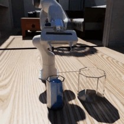 |
VLA Policy Learning on ARNOLD Benchmark
Dowon Kim, Sangmin Lee, Sungyong Park, Heewon Kim CVPR 2025 Embodied AI Workshop (1st Place) certificate / leaderboard / slides / video / media Fine-tuned VLA models for embodied manipulation, outperforming PerAct baseline through targeted data augmentation in Isaac Sim. |
|
Large-Scale Sim-to-Real Robotics Data Pipeline
LG AI Research, 2026 - Present slides Building an end-to-end R2S2R pipeline using NVIDIA Isaac Sim for scalable data generation, synthetic augmentation, and deployment validation. |
|
|
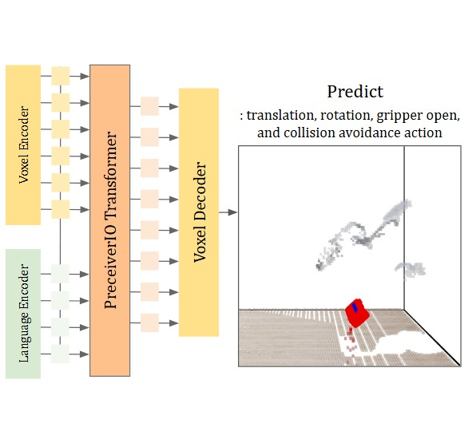 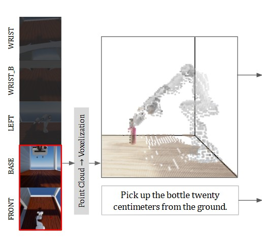 |
Multi-Viewpoint Configuration Effects in Robotic Manipulation Policy Learning
Dowon Kim, Sangmin Lee, Sungyong Park, Heewon Kim Journal of Broadcast Engineering, 2025 paper Quantitative analysis of camera viewpoint configurations for robot manipulation policy learning. |
|
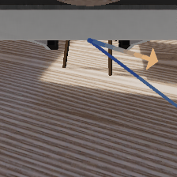 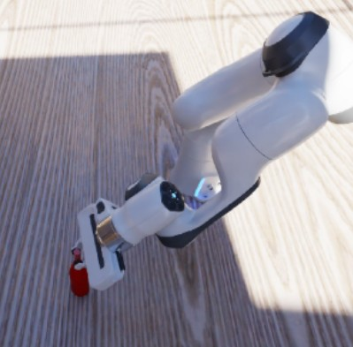 |
Visual Guidance for Improved VLA Actions
In Progress, 2025 - Present Investigating VLA models guided by visual cues derived from failure cases on the ARNOLD benchmark to achieve better manipulation actions. |
|
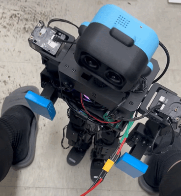 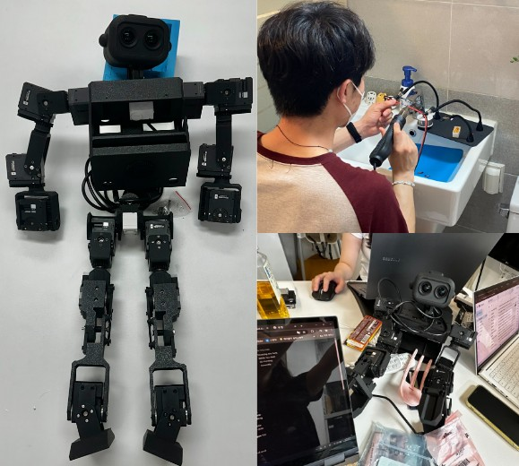 |
ToddlerBot Open-Source Robot Reproduction
Gyeonggi Gap Year Project, 2025 (Grand Prize) slides / photo Reproduced Stanford's ToddlerBot open-source robot from parts procurement to assembly, MuJoCo simulation setup and training. |

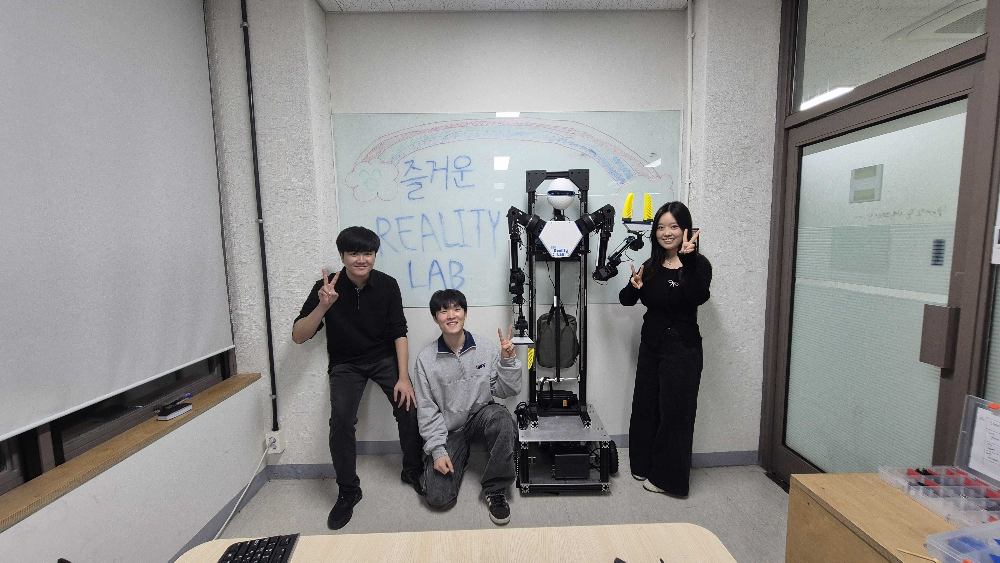 |
Humanoid Mobile Manipulation System
Reality Lab, Soongsil Univ, 2025 Full robotics lifecycle implementation: sim-to-real policy deployment, large-scale dataset generation, and systematic evaluation. |
|
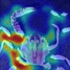 |
One-Step Diffusion-based Anomaly Detection
Project, Mar 2024 - Jun 2024 Developed a one-step denoising variant of DiffusionAD for real-time structural anomaly detection in biological products, enabling efficient inspection of irregular industrial defects. |
|
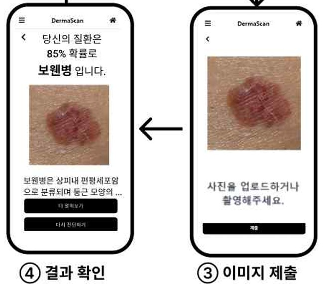 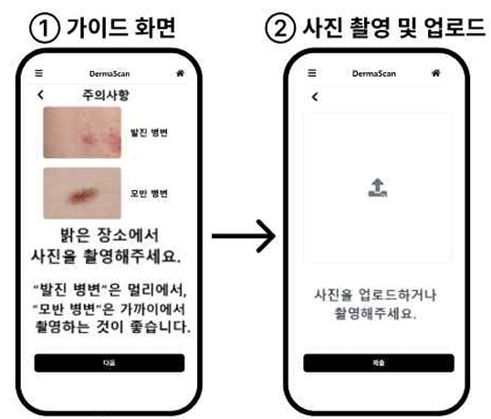 |
Deep Learning-Based Automatic Detection and Diagnosis of Skin Diseases
Sebin Lee, Dowon Kim, Geunchan Park, Dohun Kim, Iksu Kim Journal of The Korea Contents Association, 2025 paper Web application for real-time skin disease classification using deep learning. |
{kind=link}
Miscellanea |
Awards |
1st Place, ARNOLD Challenge - CVPR 2025 Embodied AI Workshop
Grand Prize - Gyeonggi Youth Gap Year Program, 2025 National STEM Scholarship (Full) - KOSAF, 2020-2026 |
Skills |
Languages: Python, C++, C, Shell
Tools: Isaac Sim, MuJoCo, ROS2, PyTorch Robots: Franka, RX1, AI Worker, OMY |
|
Template from Jon Barron. |